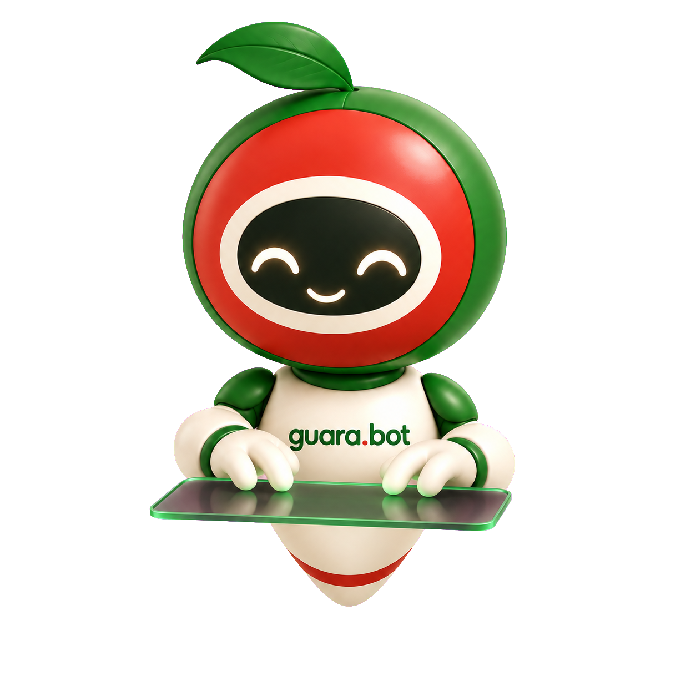

Para barbearias
Tem cliente chamando no WhatsApp?
Tem horário sábado?21:14
Tenho 9h, 10h30 e 14h. Qual fica melhor pra você?21:14
10h3021:15
Fechado! Seu corte está marcado para sábado às 10h30.✓21:15

guara.bot
Enquanto você corta,
ele atende no WhatsApp.
nanoguará.iaSaiba mais na página